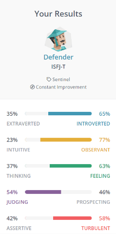
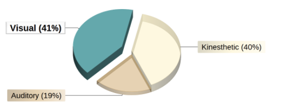
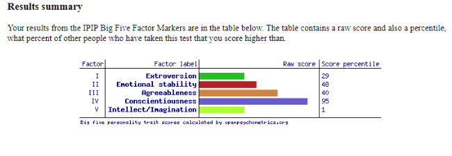

Myerrs-Briggs Test
Learning Styles Test
Big Five Personality Test
What do the results of these tests mean for you?
These tests overall show that the type of person I am is introverted and more of a person to stand at the back and observe, opposite to someone who may be extraverted and cannot stand sitting back and observing. It also shows that because of my introverted nature, I may be judgemental about certain things and form opinions very easily. Referring to the Myerrs-Briggs test, the highest scoring attribute for me was that I am very observant and watch carefully. This attribute to me can be quite useful for picking up details that other people wouldn’t have picked up but not so useful if I do not contribute.
How do you think these results may influence your behaviour in a team?
As mentioned prior, my ability to be observant and be judgmental can impact how I behave in a team. It may mean that I may contribute great ideas towards the team but it can also mean that I am very introverted in the sense that I wouldn’t be open about situations as some other people would. I am also very careful, which can influence how I interact with my other peers in terms of creating connections and affecting their feelings as I would rather keep to myself instead of causing problems.
How do you think you should take this into account when forming a team?
With these qualities and attributes in mind, when forming a team I would want to form a team that includes individuals with opposing qualities rather than the same. If i’m introverted, forming a team with other individuals who are much more extraverted allows me to experience a different environment and share ideas between two different types of people rather than having a whole group of individuals who share very similar qualities leading to poor connections, no communication and possibly lack of work within a team